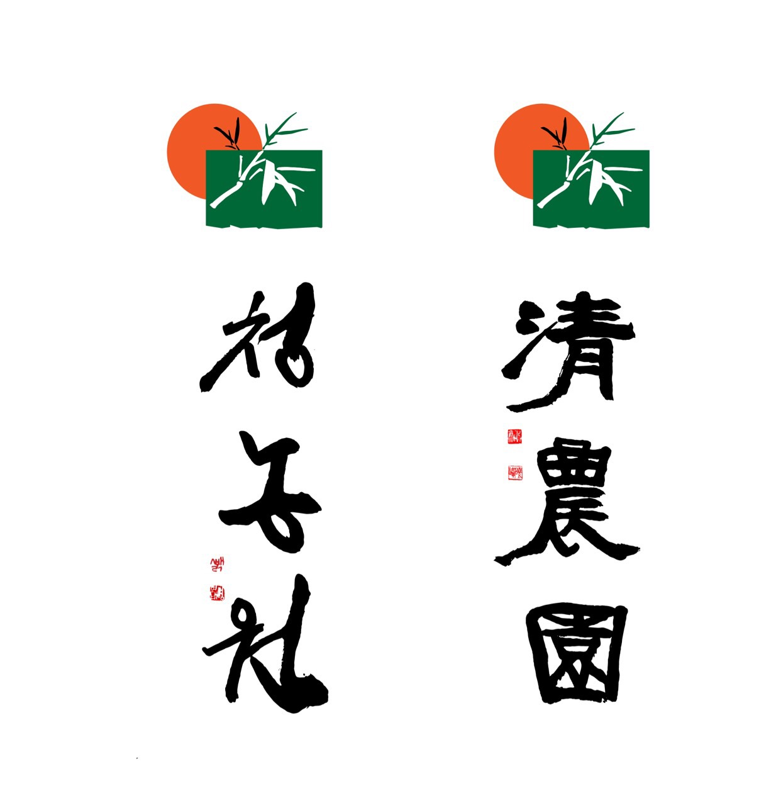

너른마당
1.AI 경마순위
2.과학으로 본 사주명리학
3.또 다른 나
Hello Every One
Welcome to My Home Page!!!
반갑습니다.
나의 Homepage 방문을 환영합니다.
인공지능
을 활용한 경마 순위와 미래를 예측하는 다양한 방법 중에서
명리학
에 대한 현대적 과학적 접근방법에 대하여 논하고, 나를 또다른 내가 바라보게 함으로써 온갖 번뇌와 고통, 다툼에서 벗어날 수 있도록 "또 다른 나" 운동을 하고자 한다.
